3．变分法本身的数学扩充
我们记得，即使在最简单的情形，要把积分
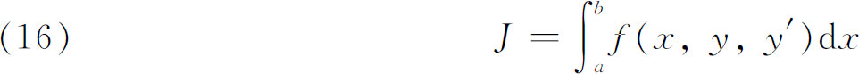
极小化或极大化，欧拉和勒让德的结果也只提供了必要条件（第24章）。在勒让德的工作以后大约50年的期间内，数学家们进一步探索了一阶和二阶变分，但没有得到决定性的结果。1837年(7)，雅可比发现了如何强化勒让德条件使它可以提供充分条件。在这方面，他的主要发现是共轭点的概念。我们先来解释一下这是什么意思。
考虑满足欧拉（特征）方程的曲线；这种曲线叫极值曲线。对于变分学的基本问题，通过给定点A，存在一族单参数极值曲线。现在假定A是我们寻求极大或极小曲线的两端点之一。给了任一极值曲线，当其他极值曲线越来越接近这极值曲线时，其他极值曲线的交点的极限就是这极值曲线上A的共轭点。表达这概念的另一方法是，我们有一族曲线，这族曲线可能有一包络。任一极值曲线与这族曲线的包络的接触点就是这极值曲线上与A共轭的点。于是雅可比条件就是：如果y（x）是原来问题中端点A和B之间的一条极值曲线，那么在A，B间的极值曲线y（x）上必定没有共轭点，或甚至于连B本身也不是。
这在具体问题中究竟是什么意思，可以从一个例子看出来。可以证明，从A点以相同速度v但以不同的倾角发射的炮弹，其所有轨线的抛物路径（图30.1）是使作用积分
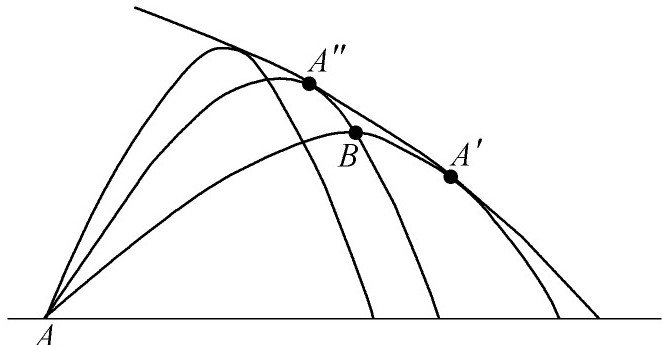
图30.1
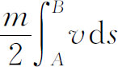
极小化或极大化的问题的极值曲线。把A，B两点之间的作用极小化的问题，一般确实有两个解，即抛物线AA″B与抛物线ABA′。还有，通过A点的抛物线族有一包络，它在A″和A′点与两抛物线相切触。在AA″B上的共轭点是A″，在ABA′上的共轭点是A′。按照雅可比条件，极值曲线AA″B不能提供一个极大或极小，但极值曲线ABA′可以提供。
雅可比重新考虑了二级变分δ2J（第24章第4节）。如果以
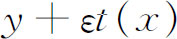
代替拉格朗日的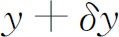
，又如果a与b是A与B的横坐标，那么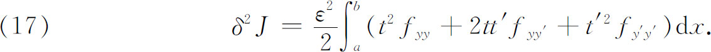
雅可比证明了
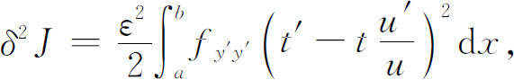
其中u是雅可比辅助方程
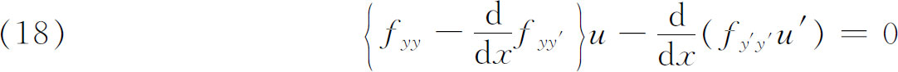
的解，其中偏导数是沿联结两端点A与B的一条极值曲线计值的。现在u（x）被要求通过A点。于是在通过A和B的极值曲线y（x）上，使u（x）取零值的所有点都是这极值曲线上共轭于A的点。如果u＝β1u1＋β2u2是辅助方程（18）的通解，那么可以证明
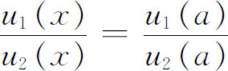
是所有与A共轭的点的横坐标的方程，其中a是点A的横坐标。
雅可比还指出，不必去解辅助方程。因为在随便什么情况下，总要解欧拉方程，设y＝y（x，c1，c2）是这方程的通解，即极值曲线族。那么u1可以取为
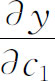
，而u2可取为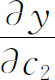
。雅可比从他关于共轭点的研究引出两条结论。第一是：如果沿从A到B的极值曲线有一个共轭于A的点，那么极大或极小便是不可能的。在这一结论上，雅可比基本上是正确的。
雅可比根据他关于共轭点的考虑还做出结论说，一条在A与B之间取得极值的曲线（欧拉方程的解），如果沿这曲线
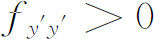
并且在A与B间（或在B点上）不存在共轭点，那么这极值曲线便给出原积分的一个极小。他断言，对于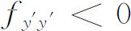
，相应的命题对极大成立。实际上，我们马上就会看到，这些充分条件是不正确的。在这篇1807年的论文中，雅可比叙述了结果并给出了证明的简单指示。正确命题的完全证明由后继的研究者补出来了。雅可比的结果除了对极大化或极小化函数的存在性有特殊价值外，他的工作使人们清楚地看到，变分学的进展不能以通常微积分的极大和极小理论为指导。
把雅可比的两条结论当作正确的接受下来有35年之久。在这时期内关于这课题的论文在陈述方面是不确切的，在证明方面是有问题的。问题没有严明简洁地陈述，因而造成各种错误。后来，魏尔斯特拉斯从事于变分学的研究工作。他的资料表述于1872年在柏林的讲义里，但是他本人没有发表出来，像魏尔斯特拉斯在其他领域里的工作那样，他的思想引起了新的兴趣，在这课题内激起了更大的动力，并锐化了思维。
魏尔斯特拉斯的第一个论点是：迄今为止所建立的极大或极小判别准则———欧拉的、勒让德的、雅可比的———都是有局限的，因为假设中的极大或极小曲线y（x）是与别的曲线y（x）＋εt（x）相比较的，在这里实际上是假定εt（x）和εt′（x）两者，或拉格朗日所说的δy和δy′两者，沿x域从A到B都是很小的。也就是说，y（x）是与其他有限制的曲线类相比较的，并且在满足这三个判别准则的条件下，它确实比这些比较曲线中任何别的一条要好。克内泽尔（Adolf Kneser，1862—1930）把这种变分叫做弱变分。然而为了找出真正极小化或极大化积分J的曲线，人们必须把它与所有其他联结A与B的曲线相比较，在这些比较曲线中，包括那些在距离上越益接近极大曲线时，其导数可能不趋近极大（或极小）曲线的导数的比较曲线。例如比较曲线在沿x域从A到B途中可能在一处或多处有尖角（图30.2）。魏尔斯特拉斯想象中的比较曲线就是克内泽尔所说的强变分。
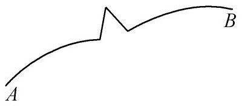
图30.2
魏尔斯特拉斯在1879年确实证明了弱变分的三个条件：曲线是极值曲线（欧拉方程的解），沿极值曲线
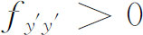
，任何与A共轭的点必定位于B点之外。这三个条件确实是极值曲线给出积分J一个极小值（对极大值是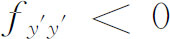
）的充分条件。然后，魏尔斯特拉斯考虑了强变分。对这些变分，首先引进了第四个必要条件。他引进一个新的函数，定义为
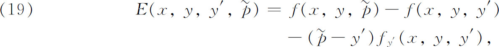
叫做E函数，或过剩函数。他的结果是，y（x）提供一个极小值的第四个必要条件是：对每个有限值
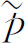
，沿极值曲线y（x）上有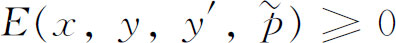
。对极小值是E≤0。后来（1879）魏尔斯特拉斯把他的注意力转向允许强变分时极大值（或极小值）的充分条件。为了简明地陈述他的充分条件，有必要引进魏尔斯特拉斯关于场的概念。考虑极值曲线的任一单参数族y＝Φ（x，γ）（图30.3），其中包括联结A与B的特殊极值曲线，不妨说它是γ＝γ0的那一条。关于这族极值曲线，除了Φ（x，γ）的连续性和可微性的某些细节外，本质性的事实是：在过A和B的极值曲线附近的一个区域内，极值曲线族中有一条且仅有一条通过这区域内的任何一点（x，y）。满足这个本质性条件的极值曲线族就叫做场。
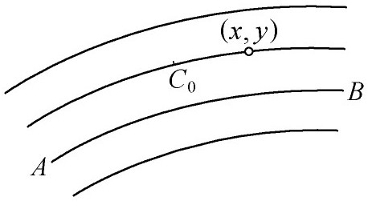
图30.3
给了一个环绕联结A和B的极值曲线C0的一个场（图30.4），如果在x＝a和x＝b间的任何点（x，y）上以及这个场所覆盖的区域内有E［x，y，
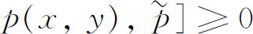
，其中p（x，y）表示通过（x，y）的极值曲线在（x，y）处的斜率，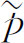
是任一有限值，那么相对于这场内联结A和B的任何其他C来说，C0使得积分J极小化。（对极大值来说，要E≤0。）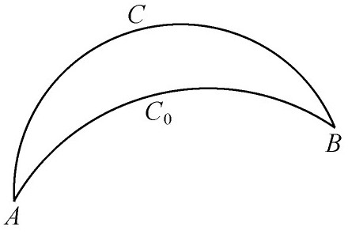
图30.4
1900年希尔伯特(8)提出了他的不变积分理论，这个理论大大简化了充分性的证明。希尔伯特提出了一个问题：是否可能确定函数p（x，y），使得积分
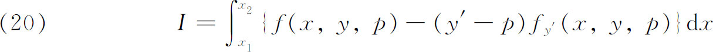
在（x，y）的区域中与积分路径无关？他发现，如果p（x，y）是这样确定的话，那么微分方程
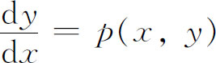
的解是一个场的极值曲线。反之，如果p（x，y）是场F的斜率函数，则在F中I与路径无关。从这个定理出发，希尔伯特导出了魏尔斯特拉斯关于强变分的充分性条件。